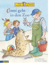

Und wieder ist Conni ganz aufgeregt: Sie darf mit der Klasse 1 a in den Zoo gehen und Kater Maus gro?e Verwandte, die gefahrlichen Lowen, besuchen. Naturlich begegnet sie dort noch vielen weiteren interessanten Tieren und darf auch mal hinter die Kulissen des Zoos schauen: Conni darf eine Schlange anfassen, sie lernt, dass Affen Hustenbonbons lieben und dass Tiere von falschem Futter krank werden konnen, und sie erfahrt, woran ein Zebrakind seine Mama erkennt und was eigentlich ein "Wiederkauer" ist. Da plotzlich bricht ein kleiner Katzenbar aus seinem Gehege aus! Die Kinder mussen schnell Hilfe holen, damit er wieder eingefangen werden kann. Dafur gibt es dann fur alle eine leckere Belohnung ... Conni macht einen Ausflug in den Zoo! Dort gibt es so viel zu sehen: Affenmamas, die ihre Jungen tragen, Lamas, die spucken, eine G iraffenfamilie und sogar eine echte Schlange! Zum Gluck hat